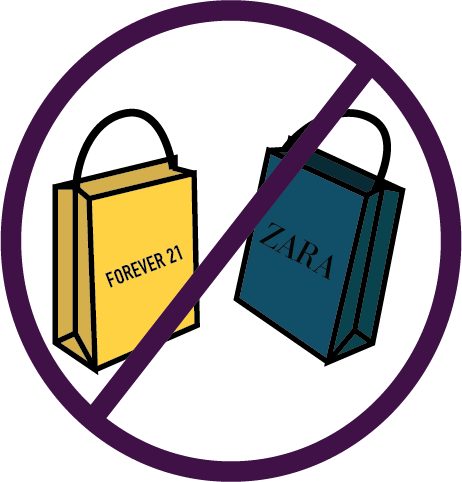

Avoid Fast Fashion
What Is Fast Fashion?
In the clothing industry, fast fashion is the business model of replicating recent catwalk trends and high-fashion designs, mass-producing them at a low cost, and bringing them to retail stores quickly, while demand is at its highest.
How does fast fashion impact the environment?
Fast fashion contributes to environmental degradation through its production processes, including the use of toxic chemicals, excess water consumption, and greenhouse gas emissions.
Fast fashion clothing is often made of low-quality materials and designed to be disposable, leading to increased textile waste and pollution.
What can we do to reduce the impacts of fast fashion?
Instead of constantly buying new clothes, try to buy fewer items of higher quality that will last longer. Choose timeless styles and versatile pieces that can be worn in multiple ways.
Support sustainable and ethical fashion brands that prioritize the environment, fair labor practices, and human rights. Look for certifications such as Fair Trade, Global Organic Textile Standard (GOTS), and Bluesign.
Shopping secondhand, whether at thrift stores or online marketplaces, is a great way to give clothes a new life and reduce textile waste. Consider organizing clothes swaps with friends or community members.
Proper care can extend the life of your clothes, reducing the need to buy new ones. Follow the care instructions on clothing labels, mend or repair clothes instead of throwing them away, and donate or recycle clothes that you no longer wear.
